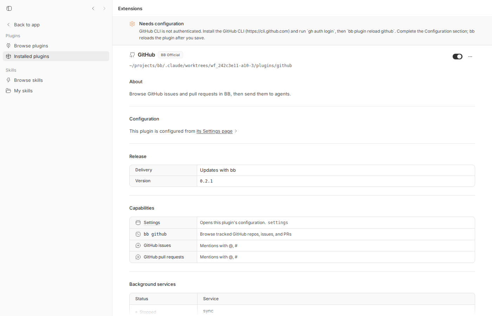
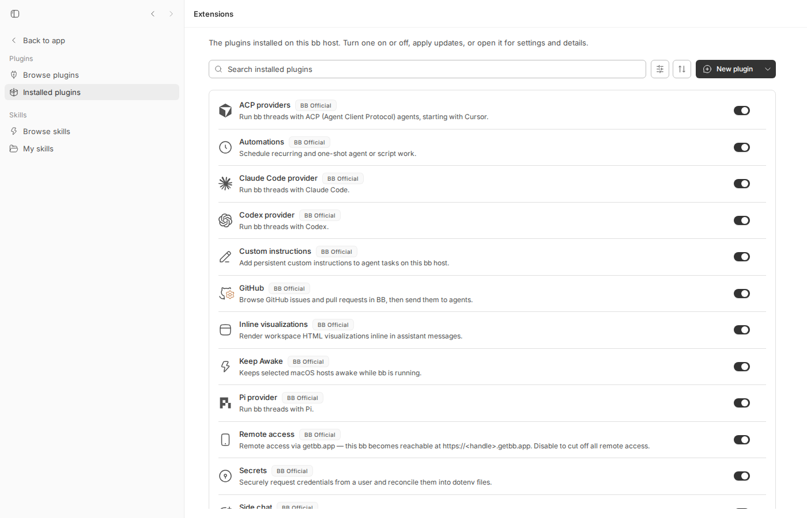
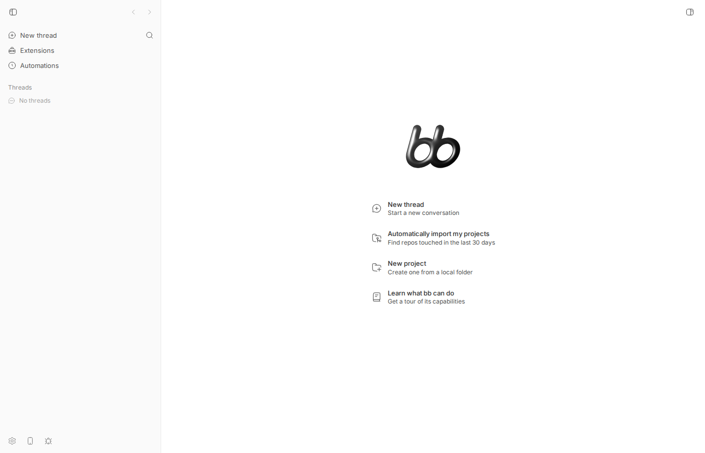
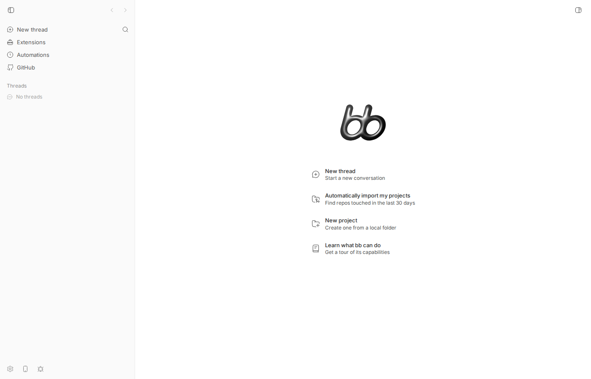

#1758 · github plugin latches needs-configuration on one transient gh auth failure and never re-probes
TL;DR
Plain-language framing. bb's optional GitHub plugin talks to GitHub through the gh command-line tool. When the plugin starts it runs gh auth status once to check that gh is logged in. gh auth status is not a local check: it calls the GitHub API, so it also fails when the network is down, when the macOS keychain holding the token is still locked, or when a slow machine makes it exceed the plugin's 10 s timeout. bb has a plugin state called needs-configuration, meant for "the user has to enter a setting"; a plugin in that state stays there until it is reloaded.
What the user sees. After a bb start during which gh auth status failed once, bb plugin list shows github … needs-configuration (GitHub CLI is not authenticated … run `gh auth login`, then `bb plugin reload github`), the GitHub entry disappears from the app sidebar, and nothing changes for hours even though gh auth status succeeds in every terminal. Running gh auth login as instructed does nothing; only bb plugin reload github (or saving the plugin's settings) helps.
What is actually wrong. Verified end to end on 16ceb3a54: checkAuth() in plugins/github/server.ts maps every failure of gh auth status to NeedsConfigurationError. That error is thrown from the load-time probe (which calls bb.status.needsConfiguration) and again from the first pass of the sync background service, which the plugin runtime treats as "stop this service and do not restart until reload". After that no code path runs gh auth status again: the runtime keeps needs-configuration until the next load, the plugin API has no way to clear it, and the app does not even load the frontend bundle of a non-running plugin, so the panel that could have shown the retained error (and its "Sync now" button) is unreachable. I reproduced it live (real gh behind a dead proxy for 10 s at server start, then healthy for 6.5 minutes: zero re-probes, still needs-configuration; bb plugin reload github → running) and with a vitest that fails on main.
Claims vs findings
| Claim | Status | Evidence |
|---|---|---|
checkAuth() runs at load and only again on reload; a one-off failure is latched permanently | Verified | Load-time probe server.ts#L751-L758; the sync service's syncAll() also calls it server.ts#L696-L697 but its NeedsConfigurationError stops the service "until reload" plugin-runtime.ts#L589-L598. Live: 3 gh calls at 07:23:54, none in the following 6.5 min (04-after-6min.txt). Unit test fails on main. |
bb plugin list shows needs-configuration with the gh auth login hint while gh auth status succeeds | Verified | 04-after-6min.txt: gh auth status ✓ and github@0.2.1 needs-configuration (GitHub CLI is not authenticated. …) in the same second. |
bb plugin reload github fixes it instantly | Verified | 05-reload.txt: reload → running, service sync: running, three fresh gh calls. |
gh auth status makes a real API call (not local-only) | Verified | With HTTPS_PROXY=http://127.0.0.1:9 (nothing listening) gh auth status exits 1 in 0.17 s printing "The token … is invalid"; normally 0.7 s here (Appendix). gh's own wording for a network failure is itself misleading. |
Plausible one-off causes: locked keychain, network blip, slow start past the 10 s timeout, bb started before gh auth login | Partly verified | Network failure: reproduced live. Slow host: reproduced by making the shim sleep 12 s (06-slow-gh-reload.txt); the plugin then reports the same needs-configuration text while the retained inner error even says "GitHub CLI not found" (the 5 s gh --version probe timed out). Keychain: no macOS here, unverified, but any non-zero exit of gh auth status takes the identical path. bb-before-login: same path; that one is a genuine configuration case, but recovery still requires a reload. |
The original ghAuthError is not recoverable after the fact; bb plugin list shows only the generic hint | Verified for the CLI, refined | bb plugin list prints only the statusDetail string. The retained error is returned by the plugin's status RPC (03-rpc-status…json) but the only consumer, the plugin's own panel, is never mounted for a non-running plugin (plugin-frontend.ts#L312-L314), so in practice it is invisible. |
The hint names the wrong remedy (gh auth login) | Verified | The remedy is bb plugin reload github (or saving the plugin's settings, which the runtime answers with a reload: plugin-service.ts#L1900-L1913). Neither is discoverable from the message except as the trailing "then …" clause. |
| Observed on bb 0.38.0 / macOS 26 / gh 2.95.0 | Unverifiable | Reproduced on Linux with gh 2.96.0 at 16ceb3a54; the code path is unchanged since plugins/github was created (git log -S checkAuth) and identical on origin/main today. |
Environment
- bb
16ceb3a54(main, 2026-08-18);git fetch origin mainshows no later commit touchingplugins/githubor the plugin runtime status handling. - Ubuntu 26.04, Linux 7.0.0-29-generic, node v24.18.0, gh 2.96.0 (authenticated as OWNER via
~/.config/gh/hosts.yml). - Dev instance from worktree
/home/USER/projects/bb/.claude/worktrees/wf_242c3e11-a10-3: app:15580, server:23580, host daemon:31580, data dir/home/USER/.bb-dev/projects-bb-.claude-worktrees-wf_242c3e11-a10-3-d733fd243d0c. The github plugin is an "official" (not auto-installed) plugin:bb plugin install builtin:github --yes. - CLI wrapper:
1758/repro/bb.sh(setsBB_SERVER_URL=http://localhost:23580and runspackages/scripts/dist/commands/run-cli.js). Below,bbmeans this wrapper. - No agent turns were run; no provider usage.
Minimal reproduction
Live repro: gh unreachable for the first seconds of bb's life, then healthy
The only trick is a transparent gh shim (1758/repro/fakebin/gh) that runs the real gh, but while a flag file exists routes it through a dead proxy (HTTPS_PROXY=http://127.0.0.1:9) — a faithful "network is down" — and logs every invocation the server makes:
#!/usr/bin/env bash
# Repro shim for get-bb/bb#1758.
# Transparent wrapper around the real `gh`. While the flag file exists it
# forces every gh network call through a dead proxy (127.0.0.1:9), which is
# how we simulate "the network was down / gh could not reach api.github.com
# for a moment when bb started". Remove the flag and gh works normally again.
FLAG="/tmp/bb-reports/issues/1758/repro/gh-offline"
LOG="/tmp/bb-reports/issues/1758/repro/gh-calls.log"
REAL="/home/USER/.local/bin/gh"
SLOW="/tmp/bb-reports/issues/1758/repro/gh-slow"
mode=online
[ -e "$FLAG" ] && mode=OFFLINE
[ -e "$SLOW" ] && { mode=SLOW; sleep 12; } # a starved host: gh takes >10 s (plugin's checkAuth timeout)
printf '%s pid=%s ppid=%s mode=%s args=%s\n' "$(date +%T)" "$$" "$PPID" "$mode" "$*" >> "$LOG"
if [ "$mode" = OFFLINE ]; then
exec env HTTPS_PROXY=http://127.0.0.1:9 HTTP_PROXY=http://127.0.0.1:9 "$REAL" "$@"
fi
exec "$REAL" "$@"
- Build once:
pnpm install --frozen-lockfile --prefer-offline && pnpm exec turbo run build. - Start the dev instance with the shim first on PATH and gh "offline" (
start-dev-offline.sh;scripts/bb-dev-appprependsBB_DEV_NODE_BIN_DIRto the server's PATH ahead of~/.local/bin, where the real gh lives, so the shim dir also carries anodesymlink):#!/usr/bin/env bash # Step 1 of the repro: start the bb dev instance while `gh` cannot reach GitHub. # scripts/bb-dev-app prepends BB_DEV_NODE_BIN_DIR to PATH before ~/.local/bin # (where the real gh lives), so pointing it at the shim dir (which also holds a # `node` symlink) makes the server's `gh` calls hit the shim. set -euo pipefail WT=/home/USER/projects/bb/.claude/worktrees/wf_242c3e11-a10-3 : > /tmp/bb-reports/issues/1758/repro/gh-calls.log touch /tmp/bb-reports/issues/1758/repro/gh-offline # gh is "offline" from now on export BB_DEV_NODE_BIN_DIR=/tmp/bb-reports/issues/1758/repro/fakebin cd "$WT" scripts/bb-dev-app current
If the github plugin is not installed yet:bb plugin install builtin:github --yes(I had installed it in a previous run of the same instance; the shim log below therefore starts with the plugin loading at server start). - Observe the latch (
01-plugin-list-while-offline.txt, shim log, dev.log):$ cat 1758/repro/gh-calls.log 07:23:54 pid=2314480 ppid=2313311 mode=OFFLINE args=--version 07:23:54 pid=2314493 ppid=2313311 mode=OFFLINE args=auth status # load-time probe 07:23:54 pid=2314513 ppid=2313311 mode=OFFLINE args=auth status # sync service's first syncAll() $ grep github dev.log [07:23:54] INFO: [server] plugin github@0.2.1 loaded [07:23:54] INFO: [server] [plugin:github] service sync needs configuration; not restarting until reload $ bb plugin list | grep -A3 ^github github@0.2.1 needs-configuration (GitHub CLI is not authenticated. Install the GitHub CLI (https://cli.github.com) and run `gh auth login`, then `bb plugin reload github`.) source: builtin:github service sync: stopped command: bb github — Browse tracked GitHub repos, issues, and PRs
- Bring gh back (07:24:07):
rm 1758/repro/gh-offline;gh auth status→ ✓ Logged in. - Wait longer than the plugin's 5-minute sync interval and look again (
wait-and-check.sh, output04-after-6min.txt):== 07:30:41 == -- gh calls made by the server process since start (shim log): 07:23:54 pid=2314480 ppid=2313311 mode=OFFLINE args=--version 07:23:54 pid=2314493 ppid=2313311 mode=OFFLINE args=auth status 07:23:54 pid=2314513 ppid=2313311 mode=OFFLINE args=auth status -- gh works right now: github.com ✓ Logged in to github.com account OWNER (/home/USER/.config/gh/hosts.yml) -- bb plugin list: github@0.2.1 needs-configuration (GitHub CLI is not authenticated. Install the GitHub CLI (https://cli.github.com) and run `gh auth login`, then `bb plugin reload github`.) source: builtin:github handlers: 2 calls / 6ms total / 6ms max, 1 errors service sync: stopped -- plugin status RPC (what the panel banner would read): {"ok":true,"result":{"ghOk":false,"ghError":"gh auth status failed: github.com\n X Failed to log in to github.com account OWNER (/home/USER/.config/gh/hosts.yml)\n - Active account: true\n - The token in /home/USER/.config/gh/hosts.yml is invalid.\n - To re-authenticate, run: gh auth refresh -h github.com\n - To forget about this account, run: gh auth logout -h github.com -u OWNER","repos":[],"lastSyncedAt":"2026-08-18T07:23:16.057Z"}} -- server log lines about github: 54:@bb/server:dev: [07:23:53] INFO: [server] plugin github: rebuilding frontend bundle (plugin source is newer than dist/app.js) 61:@bb/server:dev: [07:23:54] INFO: [server] plugin github@0.2.1 loaded 63:@bb/server:dev: [07:23:54] INFO: [server] [plugin:github] service sync needs configuration; not restarting until reload 75:@bb/server:dev: [07:25:07] WARN: [server] [plugin:github] rpc status failed: rpc input validation failedExpected (issue): the plugin notices thatghworks and comes back. Actual: 6 min 34 s after gh recovered the server has not rungheven once more,bb plugin liststill saysneeds-configuration (GitHub CLI is not authenticated … run `gh auth login` …), the sync service isstopped, and the retained error (only visible via the RPC) still describes the failure from 07:23:54. - The workaround from the issue (
05-reload.txt):$ bb plugin reload github github@0.2.1 running source: builtin:github handlers: 3 calls / 9ms total / 6ms max, 1 errors service sync: running command: bb github — Browse tracked GitHub repos, issues, and PRs --- gh calls: 07:30:49 pid=2379402 ppid=2313311 mode=online args=--version 07:30:49 pid=2379416 ppid=2313311 mode=online args=auth status 07:30:50 pid=2379552 ppid=2313311 mode=online args=auth status



running, so the panel that would show the retained gh error and its "Sync now" button cannot be reached.
bb plugin reload github: GitHub is back. Nothing about gh changed between the two screenshots.Variant: slow host (gh takes > 10 s)
The shim can also sleep 12 s before running gh (flag gh-slow), the "load average 23" scenario. Reload the plugin under that condition (06-slow-gh-reload.txt):
$ touch 1758/repro/gh-slow; bb plugin reload github; rm 1758/repro/gh-slow
github@0.2.1 needs-configuration (GitHub CLI is not authenticated. Install the GitHub CLI (https://cli.github.com) and run `gh auth login`, then `bb plugin reload github`.)
source: builtin:github
handlers: 3 calls / 9ms total / 6ms max, 1 errors
{"ok":true,"result":{"ghOk":false,"ghError":"GitHub CLI not found. Install the GitHub CLI (https://cli.github.com) and run `gh auth login`, then `bb plugin reload github`.","repos":[],"lastSyncedAt":"2026-08-18T07:30:50.654Z"}}
Same latch, same "not authenticated" hint; the retained inner error is "GitHub CLI not found" because the 5 s gh --version probe in resolveGh() timed out first. Both messages are wrong for a machine that merely was busy.
Unit-level repro (vitest, fails on main)
File: 1758/repro/server.auth-latch.test.ts — copy to plugins/github/server.auth-latch.test.ts and run cd plugins/github && pnpm exec vitest run server.auth-latch.test.ts. It drives the real plugin entry (plugins/github/server.ts) through createFakePluginHost from @get-bb/plugin-sdk/testing, with a fake gh on PATH whose auth status fails while a flag file exists (with gh 2.96's verbatim offline wording) and succeeds afterwards; auth token (local-only) always succeeds because credentials are configured.
// Repro for get-bb/bb#1758: the github plugin probes `gh auth status` once at
// load, latches needs-configuration on any failure, and never re-probes.
//
// A fake `gh` on PATH fails (like a network blip / locked keychain / dead
// proxy) while the plugin loads, then starts succeeding. The plugin should
// notice that gh works again; on main it never does.
import {
chmodSync,
existsSync,
mkdtempSync,
readFileSync,
rmSync,
writeFileSync,
} from "node:fs";
import { tmpdir } from "node:os";
import { join } from "node:path";
import { afterEach, beforeEach, describe, expect, it } from "vitest";
import { createFakePluginHost } from "@get-bb/plugin-sdk/testing";
import plugin from "./server";
let binDir: string;
let offlineFlag: string; // exists → `gh auth status` fails like a network outage
let noTokenFlag: string; // exists → gh has no credentials at all
let callLog: string;
const originalPath = process.env.PATH;
function ghCalls(): string[] {
if (!existsSync(callLog)) return [];
return readFileSync(callLog, "utf8")
.trim()
.split("\n")
.filter((line: string) => line.length > 0);
}
beforeEach(() => {
binDir = mkdtempSync(join(tmpdir(), "bb-1758-gh-"));
offlineFlag = join(binDir, "gh-offline");
noTokenFlag = join(binDir, "gh-no-token");
callLog = join(binDir, "gh-calls.log");
// Mimics real `gh` (2.96) closely enough:
// --version always works, so the plugin's resolveGh() finds it
// auth token local-only, no network: succeeds unless no credentials
// auth status network probe: fails with gh's verbatim "token is invalid"
// wording while offline (that IS what gh prints when it
// cannot reach api.github.com), or "You are not logged into
// any GitHub hosts" when there are no credentials.
writeFileSync(
join(binDir, "gh"),
`#!/usr/bin/env bash
echo "$*" >> "${callLog}"
case "$1 $2" in
"--version ") echo "gh version 2.96.0 (fake)"; exit 0;;
"auth token")
if [ -e "${noTokenFlag}" ]; then echo "no oauth token found for github.com" >&2; exit 1; fi
echo "gho_fake_token_is_configured_locally"; exit 0;;
"auth status")
if [ -e "${noTokenFlag}" ]; then
echo "You are not logged into any GitHub hosts. To log in, run: gh auth login" >&2; exit 1
fi
if [ -e "${offlineFlag}" ]; then
echo "github.com" >&2
echo " X Failed to log in to github.com account someone (keyring)" >&2
echo " - The token in keyring is invalid." >&2
exit 1
fi
echo "github.com"; echo " ✓ Logged in to github.com account someone (keyring)"; exit 0;;
*) echo "[]"; exit 0;;
esac
`,
);
chmodSync(join(binDir, "gh"), 0o755);
process.env.PATH = `${binDir}:${originalPath ?? ""}`;
});
afterEach(() => {
process.env.PATH = originalPath;
rmSync(binDir, { recursive: true, force: true });
});
async function loadWithSyncServiceOnce() {
const { bb, harness } = createFakePluginHost({ pluginId: "github" });
await plugin(bb);
// Run the sync service the way the host does at activation. On main its
// first syncAll() throws NeedsConfigurationError and it stops for good; a
// fixed plugin keeps looping, so abort it after its first pass.
const { controller, done } = harness.runService("sync");
await new Promise((resolve) => setTimeout(resolve, 150));
controller.abort();
await done;
return { bb, harness };
}
describe("github plugin gh auth probe (#1758)", () => {
it("re-probes gh after a transient auth-status failure instead of latching", async () => {
// 1. gh is "offline" while bb starts (credentials exist, API unreachable).
writeFileSync(offlineFlag, "");
const { harness } = await loadWithSyncServiceOnce();
const before = (await harness.callRpc("status")) as { ghOk: boolean };
expect(before.ghOk).toBe(false); // probe failed at load, as expected
const callsWhileOffline = ghCalls().length;
// 2. gh recovers (network back / keychain unlocked). Nothing else changes.
rmSync(offlineFlag);
// 3. The plugin is asked for its status (panel banner / `bb github`).
// A plugin that re-probes on demand or on its interval reports ghOk.
// On main NOTHING re-runs `gh auth status`: ghOk stays false with the
// stale error, and not a single further gh call is made.
const after = (await harness.callRpc("status")) as {
ghOk: boolean;
ghError: string | null;
};
expect(ghCalls().length).toBeGreaterThan(callsWhileOffline); // FAILS on main: no re-probe
expect(after.ghOk).toBe(true); // FAILS on main: latched
});
it("does not report needs-configuration (\"run gh auth login\") for a transient probe failure", async () => {
writeFileSync(offlineFlag, "");
const { harness } = await loadWithSyncServiceOnce();
// FAILS on main: both the load-time probe and the sync service latch
// needs-configuration with the `gh auth login` remedy, although gh holds
// valid credentials and only the network probe failed.
expect(harness.needsConfigurationMessages).toEqual([]);
});
it("still reports needs-configuration when gh has no credentials at all", async () => {
writeFileSync(noTokenFlag, "");
const { harness } = await loadWithSyncServiceOnce();
expect(harness.needsConfigurationMessages.length).toBeGreaterThan(0);
expect(harness.needsConfigurationMessages[0]).toContain("gh auth login");
});
it("control: with gh working from the start the plugin never reports needs-configuration", async () => {
const { harness } = await loadWithSyncServiceOnce();
expect(harness.needsConfigurationMessages).toEqual([]);
const status = (await harness.callRpc("status")) as { ghOk: boolean };
expect(status.ghOk).toBe(true);
});
});
On main two of the four tests fail (vitest-main-clean.txt): the first because after gh recovers the plugin makes no further gh call at all (expected 3 to be greater than 3) and ghOk stays false; the second because a purely transient failure produced two needs-configuration reports carrying the gh auth login remedy. The "no credentials at all" and the healthy control cases pass on main and must keep passing after a fix.
RUN v4.1.1 /home/USER/projects/bb/.claude/worktrees/wf_242c3e11-a10-3/plugins/github
❯ bb-plugin-github server.auth-latch.test.ts (4 tests | 2 failed) 671ms
× re-probes gh after a transient auth-status failure instead of latching 176ms
× does not report needs-configuration ("run gh auth login") for a transient probe failure 166ms
⎯⎯⎯⎯⎯⎯⎯ Failed Tests 2 ⎯⎯⎯⎯⎯⎯⎯
FAIL bb-plugin-github server.auth-latch.test.ts > github plugin gh auth probe (#1758) > re-probes gh after a transient auth-status failure instead of latching
AssertionError: expected 3 to be greater than 3
❯ server.auth-latch.test.ts:113:30
111| ghError: string | null;
112| };
113| expect(ghCalls().length).toBeGreaterThan(callsWhileOffline); // FA…
| ^
114| expect(after.ghOk).toBe(true); // FAILS on main: latched
115| });
⎯⎯⎯⎯⎯⎯⎯⎯⎯⎯⎯⎯⎯⎯⎯⎯⎯⎯⎯⎯⎯⎯⎯⎯[1/2]⎯
FAIL bb-plugin-github server.auth-latch.test.ts > github plugin gh auth probe (#1758) > does not report needs-configuration ("run gh auth login") for a transient probe failure
AssertionError: expected [ …(2) ] to deeply equal []
- Expected
+ Received
- []
+ [
+ "GitHub CLI is not authenticated. Install the GitHub CLI (https://cli.github.com) and run `gh auth login`, then `bb plugin reload github`.",
+ "GitHub CLI is not authenticated. Install the GitHub CLI (https://cli.github.com) and run `gh auth login`, then `bb plugin reload github`.",
+ ]
❯ server.auth-latch.test.ts:123:48
121| // needs-configuration with the `gh auth login` remedy, although g…
122| // valid credentials and only the network probe failed.
123| expect(harness.needsConfigurationMessages).toEqual([]);
| ^
124| });
125|
⎯⎯⎯⎯⎯⎯⎯⎯⎯⎯⎯⎯⎯⎯⎯⎯⎯⎯⎯⎯⎯⎯⎯⎯[2/2]⎯
Test Files 1 failed (1)
Tests 2 failed | 2 passed (4)
Start at 07:34:47
Duration 979ms (transform 115ms, setup 0ms, import 205ms, tests 671ms, environment 0ms)
Root cause
1. Every gh auth status failure is classified as a configuration error. server.ts#L500-L508:
async function checkAuth(): Promise<void> {
try {
await gh(["auth", "status"], 10_000);
ghAuthError = null;
} catch (error) {
ghAuthError = error instanceof Error ? error.message : String(error);
throw needsConfiguration(`GitHub CLI is not authenticated. ${GH_HINT}`);
}
}
gh auth status hits the GitHub API, so network outage, locked keychain, dead proxy, or the 10 s execFile timeout on a starved host all land here. resolveGh() (server.ts#L479-L492) has the same shape: a 5 s gh --version timeout is reported as "GitHub CLI not found". GH_HINT (server.ts#L20-L22) always says gh auth login.
2. The error is thrown from the two places that latch. At load, server.ts#L751-L758 calls bb.status.needsConfiguration(message). Immediately after, the sync service's first syncAll() (server.ts#L696-L697, service at server.ts#L728-L750) throws the same error out of start(). The runtime treats that as terminal: plugin-runtime.ts#L589-L598
if (isNeedsConfigurationError(outcome.error)) {
service.state = "stopped";
reportNeedsConfiguration(id, outcome.error.message || `service ${name} needs configuration`);
logger.info(`[plugin:${id}] service ${name} needs configuration; not restarting until reload`);
return;
}
Ordinary crashes get exponential-backoff restarts (same function, a few lines down); NeedsConfigurationError deliberately does not. So the only periodic re-probe the plugin has (the 5-minute sync loop) is dead after one failure.
3. Nothing can clear the state except a reload. The runtime keeps needs-configuration in a map that is only cleared "on the next load" (plugin-runtime.ts#L455-L457, plugin-runtime.ts#L1595); the plugin API exposes only bb.status.needsConfiguration(message), no way back to running (plugin-api.ts#L1166-L1175). The one automatic reload is triggered by a settings save (plugin-service.ts#L1900-L1913), which the github plugin's message does not mention and which has nothing to do with gh.
4. The retained error and the manual re-probe are unreachable. The plugin remembers ghAuthError and its status RPC returns it (server.ts#L909-L921); the panel would render it and offers a "Sync now" button whose refresh RPC would call checkAuth() again. But the app skips the frontend bundle of any plugin whose status is not running (plugin-frontend.ts#L312-L314), so the sidebar entry vanishes (screenshots above), the banner in app.tsx#L2405-L2410 never mounts, and even that refresh could not have cleared the runtime status. bb plugin list prints only statusDetail, i.e. the generic hint.
Why the symptom follows. One failed probe at startup → needs-configuration + sync service stopped → no further gh invocation from the server process, ever → bb plugin list keeps quoting a hint (gh auth login) that cannot change anything, the GitHub panel is gone, and only bb plugin reload github (or a settings save) re-runs the probe. Deeper issue: the plugin uses the runtime's configuration state for a dependency availability condition, and the runtime, correctly for real configuration errors, offers no self-healing for it.
Proposed fix (first principles)
Contained in the plugin; no server/daemon boundary change, no wire change, no HOST_DAEMON_PROTOCOL_VERSION bump. Prototype diff: 1758/repro/proposed-fix.diff (applied in my worktree; makes all four tests in the repro file pass and keeps the existing bb-plugin-github typecheck and tests green: turbo output, vitest output).
- Classify probe failures. In
checkAuth(), throwNeedsConfigurationErroronly when gh is missing or holds no credentials at all.gh auth tokenis network-free (verified: it prints the token behind a dead proxy and fails with "no oauth token found for github.com" when there is no config,07-gh-token-probe.txt), so use it to tell "not logged in" from "logged in but the API probe failed". Everything else becomes a plainErrorthat carries gh's stderr. - Do not let the sync loop die on transient errors. Catch non-configuration errors inside the
syncservice loop, log them, and retry with backoff (30 s doubling up to the 5-minute interval) instead of throwing out ofstart(). Rethrow onlyNeedsConfigurationError. Do not rely on the runtime's crash-restart for this: a throw during activation would mark the pluginerror(plugin-runtime.ts#L603-L611). - Re-probe on demand. In the
statusRPC, if the last probe failed, runcheckAuth()again before answering, so the panel banner (and any CLI/SDK caller) reflects the current state. - Load-time. Only call
bb.status.needsConfigurationfor the two configuration cases; log transient failures as warnings.
diff --git a/plugins/github/server.ts b/plugins/github/server.ts
index 2daeebe8d..bb4025007 100644
--- a/plugins/github/server.ts
+++ b/plugins/github/server.ts
@@ -12,6 +12,10 @@ import { defineRpcContract, type BbPluginApi } from "@get-bb/plugin-sdk";
import { z } from "zod";
const SYNC_INTERVAL_MS = 5 * 60_000;
+// Retry cadence while `gh auth status` fails for a reason that is not a
+// configuration problem (network blip, locked keychain, slow host): start at
+// 30 s and back off to the regular sync interval.
+const SYNC_RETRY_BASE_MS = 30_000;
const ISSUE_PAGE = 100;
const CLOSED_ISSUE_PAGE = 50;
const PR_PAGE = 50;
@@ -310,6 +314,10 @@ function needsConfiguration(message: string): Error {
});
}
+function isNeedsConfigurationError(error: unknown): error is Error {
+ return error instanceof Error && error.name === "NeedsConfigurationError";
+}
+
/** owner/name from any GitHub remote URL (https, ssh, git@), else null. */
export function parseGithubRemote(url: string): string | null {
const match = url
@@ -497,14 +505,37 @@ export default async function plugin(bb: BbPluginApi) {
return stdout;
}
+ // `gh auth status` is a network probe (it calls the GitHub API), so a
+ // failure does not by itself mean gh is unconfigured. Only two outcomes
+ // are configuration problems worth latching needs-configuration on:
+ // gh missing, and gh present but holding no credentials at all
+ // (`gh auth token` is local-only, so it answers that without the network).
+ // Anything else (network down, keychain locked, slow host, timeout) is
+ // reported as a plain error so callers retry instead of latching.
async function checkAuth(): Promise<void> {
try {
await gh(["auth", "status"], 10_000);
ghAuthError = null;
+ return;
} catch (error) {
ghAuthError = error instanceof Error ? error.message : String(error);
+ if (isNeedsConfigurationError(error)) throw error; // gh not found
+ }
+ let hasToken = true;
+ try {
+ await gh(["auth", "token"], 5_000);
+ } catch (error) {
+ // Only gh's own "no credentials" answer is a configuration problem; a
+ // timeout or a crash of the local check is treated as transient too.
+ const message = error instanceof Error ? error.message : String(error);
+ hasToken = !/no oauth token|not logged in/i.test(message);
+ }
+ if (!hasToken) {
throw needsConfiguration(`GitHub CLI is not authenticated. ${GH_HINT}`);
}
+ throw new Error(
+ `gh auth status failed; gh has credentials, so this is probably transient and will be retried: ${ghAuthError}`,
+ );
}
// ------------------------------------------------------------------
@@ -730,10 +761,27 @@ export default async function plugin(bb: BbPluginApi) {
// instead of crash-looping.
bb.background.service("sync", {
async start(signal) {
+ let failures = 0;
while (!signal.aborted) {
- await syncAll();
+ let delayMs = SYNC_INTERVAL_MS;
+ try {
+ await syncAll();
+ failures = 0;
+ } catch (error) {
+ if (isNeedsConfigurationError(error)) throw error;
+ failures += 1;
+ delayMs = Math.min(
+ SYNC_RETRY_BASE_MS * 2 ** (failures - 1),
+ SYNC_INTERVAL_MS,
+ );
+ bb.log.warn(
+ `sync failed (retry in ${Math.round(delayMs / 1000)}s): ${
+ error instanceof Error ? error.message : String(error)
+ }`,
+ );
+ }
await new Promise<void>((resolve) => {
- const timer = setTimeout(resolve, SYNC_INTERVAL_MS);
+ const timer = setTimeout(resolve, delayMs);
signal.addEventListener(
"abort",
() => {
@@ -752,9 +800,11 @@ export default async function plugin(bb: BbPluginApi) {
try {
await checkAuth();
} catch (error) {
- bb.status.needsConfiguration(
- error instanceof Error ? error.message : String(error),
- );
+ if (isNeedsConfigurationError(error)) {
+ bb.status.needsConfiguration(error.message);
+ } else {
+ bb.log.warn(error instanceof Error ? error.message : String(error));
+ }
}
// ------------------------------------------------------------------
@@ -907,6 +957,15 @@ export default async function plugin(bb: BbPluginApi) {
bb.rpc.register(githubRpcContract, {
/** () → auth/sync status for the panel banner. */
async status() {
+ // Re-probe on demand after a failed probe so a recovered gh is noticed
+ // the next time the panel asks, not only on the next sync tick.
+ if (ghAuthError !== null) {
+ try {
+ await checkAuth();
+ } catch {
+ // ghAuthError already carries the failure
+ }
+ }
const cursor = await bb.storage.kv.get<{
lastSyncedAt: string;
repos: number;
What could go wrong / follow-ups. (a) While gh is unreachable the plugin now shows running; the retained error is visible in the panel banner and dev log, but bb plugin list has no "degraded" detail. If a visible status is wanted the runtime would need a plugin-facing degraded/clear API (new public API ⇒ experimental_ prefix and docs/api_to_audit.md per AGENTS.md); I would not block the fix on that. (b) The panel banner text in app.tsx still says "run gh auth login, then reload the plugin"; it should be reworded to show the actual error and offer "Sync now". (c) resolveGh() should distinguish ENOENT from a timeout so a slow host is not reported as "GitHub CLI not found" (in the prototype a timeout there is treated as transient only because it happens on the auth status path; a first-call timeout at --version still surfaces as NeedsConfiguration — worth tightening). (d) The genuinely-unauthenticated case still requires bb plugin reload github after gh auth login; that matches the runtime contract and the message is now correct for it. (e) GH_TOKEN-only setups: gh auth token returns the env token, so they are treated as configured; fine.
PR review
No open PRs are linked to this issue.
Related issues
- #1267 (closed): GitHub plugin fails to load PRs when Issues are disabled — the other place where one gh failure took the whole sync down; fixed by per-repo tolerance in
fetchRepoItems. - #1543 (open): wake threads from native GitHub PR state changes — will lean on the same gh plumbing and sync loop.
- No prior issue about needs-configuration latching or the plugin runtime's "not restarting until reload" policy was found (searched "needs-configuration", "gh auth", "github plugin").
Appendix
Commands run
git checkout 16ceb3a54 ; pnpm install --frozen-lockfile --prefer-offline ; pnpm exec turbo run build # shim self-test (real gh through a dead proxy fails; normal gh works) bash 1758/repro/shim-selftest.sh # first attempt (superseded, see 02-plugin-list-after-gh-online.txt): scripts/bb-dev-app current with the shim on PATH, # bb plugin install builtin:github --yes → the launcher puts ~/.local/bin (real gh) ahead of PATH; fixed by BB_DEV_NODE_BIN_DIR # clean run bash 1758/repro/start-dev-offline.sh # server starts 07:23:53 with gh offline bash 1758/repro/bb.sh plugin list | grep -A3 ^github # 01-plugin-list-while-offline.txt rm 1758/repro/gh-offline # 07:24:07 gh healthy again curl -s -X POST http://localhost:23580/api/v1/plugins/github/rpc/status -H 'content-type: application/json' -H 'origin: http://localhost:15580' -d null # 03-rpc-status-after-gh-online.json bash 1758/repro/wait-and-check.sh 07:30:40 | tee 1758/repro/04-after-6min.txt bash 1758/repro/bb.sh plugin reload github # 05-reload.txt touch 1758/repro/gh-slow; bash 1758/repro/bb.sh plugin reload github; rm 1758/repro/gh-slow # 06-slow-gh-reload.txt dev-browser --browser bb1758 --headless run 1758/repro/shot-home.js ; … shot-extensions.js # screenshots pnpm dev:stop bash 1758/repro/gh-token-probe.sh # 07-gh-token-probe.txt cp 1758/repro/server.auth-latch.test.ts plugins/github/ && cd plugins/github && pnpm exec vitest run server.auth-latch.test.ts # fails on main git apply 1758/repro/proposed-fix.diff ; pnpm exec turbo run typecheck test --filter=bb-plugin-github --force # all green
gh behaviour behind a dead proxy vs. normally
$ time gh auth status github.com ✓ Logged in to github.com account OWNER (/home/USER/.config/gh/hosts.yml) real 0m0.708s $ time HTTPS_PROXY=http://127.0.0.1:9 gh auth status github.com X Failed to log in to github.com account OWNER (/home/USER/.config/gh/hosts.yml) - Active account: true - The token in /home/USER/.config/gh/hosts.yml is invalid. - To re-authenticate, run: gh auth refresh -h github.com real 0m0.174s exit=1
gh auth token as a network-free discriminator
== gh auth token, offline (dead proxy) == gho_<redacted> exit=0 == gh auth token, no config at all (empty GH_CONFIG_DIR) == no oauth token found for github.com exit=1 == gh auth status, no config at all == You are not logged into any GitHub hosts. To log in, run: gh auth login exit=1
vitest with the prototype fix applied
RUN v4.1.1 /home/USER/projects/bb/.claude/worktrees/wf_242c3e11-a10-3/plugins/github
Test Files 1 passed (1)
Tests 4 passed (4)
Start at 07:35:57
Duration 998ms (transform 115ms, setup 0ms, import 200ms, tests 691ms, environment 0ms)
Files
gh-calls.log— every gh invocation the server made (clean run + reload + slow variant).dev.log— full dev-server log of the clean run.start-dev.log,dev-stop.log.